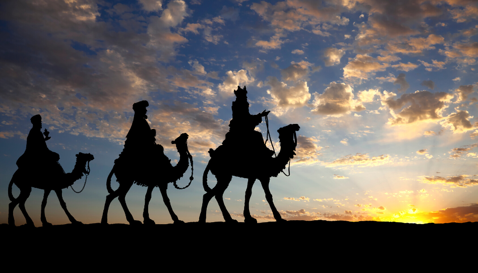
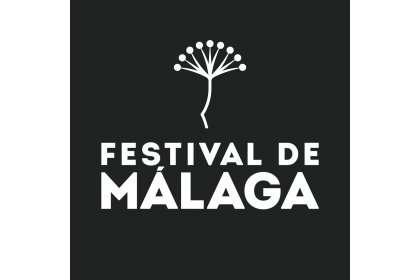
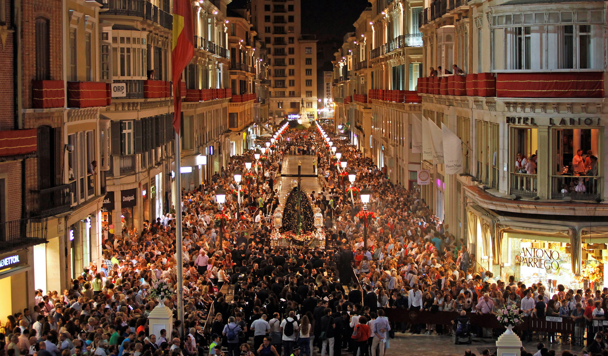
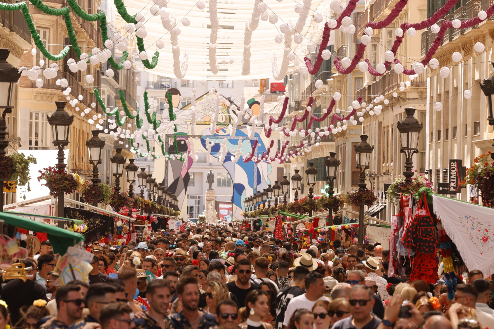
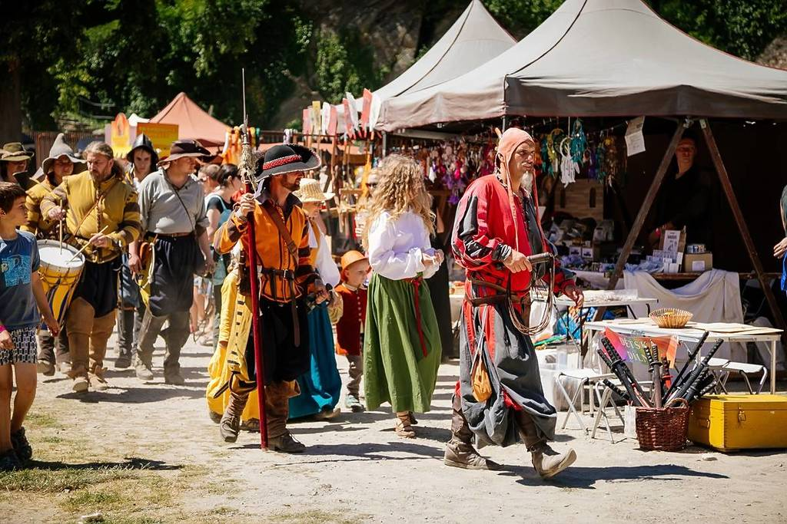

- Time: January 5th
- This festivity marks the end of Christmas. In this night, all children from Spain get their Christmas gifts. In Spain, the Three Wise Men are like Santa Claus in other countries.
The Three Wise Men

Malaga's Film Festival

- Time: March. The exact days vary each year.
- This festival is one of the most important film festivals in Spain. It focuses on promoting Spanish cinema and showcases a variety of films, including feature films, documentaries, and short films. It started in 1998 and it aims to promote Spanish and Latin American productions.
Holy Week

- Time: End of March or beginning of April, depending on the date of Easter.
- Holy Week is one of the most famous and significant religious events not only in Malaga, but in all Spain. It features elaborate processions with religious floats, traditional music, and penitents dressed in distinctive costumes. This event attracts thousands of visitors each year.
Malaga's Fair

- Time: August, usually the second week of the month.
- This is one of the most important and lively festivals in Malaga. In the morning, there are traditional activities such as horse parades, flamenco performances, and local food stalls. At night, the youth gather in the fair to dance at clubs and ride in different attractions.
Medieval Market

- Time: In December.
- The Medieval Market in Malaga is a popular event that recreates the atmosphere of the Middle Ages. Visitors can enjoy traditional crafts, food, music, and performances. The market features vendors dressed in period costumes, selling handmade goods and local delicacies from all places of Malaga's province.